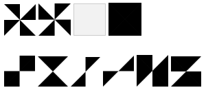

|
Solution: There are initially \( 2^8 \) = 256 possible tiles. Most of these will be rotations of each other, but some will have less rotationally symmetric partners. There are 4 tiles which have 90 degree symmetry and thus no partners; and there are 6 tiles which have 180 degree symmetry, and thus come in twos. (See image)  The rest will come in fours. Split the 256 tiles along these symmetries: 4 + 12 + 240 And divide each total by its number of partners: 4 + 6 + 60 For a total of 70 distinct tiles. (These tiles form the basis for the solitaire tile game Izzi.) |